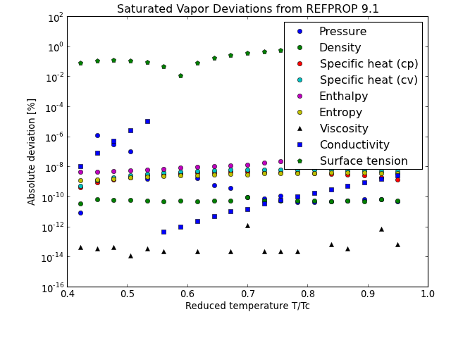

<!DOCTYPE html PUBLIC "-//W3C//DTD XHTML 1.0 Transitional//EN"
  "http://www.w3.org/TR/xhtml1/DTD/xhtml1-transitional.dtd">


<html xmlns="http://www.w3.org/1999/xhtml">
  <head>
    <meta http-equiv="Content-Type" content="text/html; charset=utf-8" />
    
    <title>Water &mdash; CoolProp 3.3.0 documentation</title>
    
    <link rel="stylesheet" href="../_static/Coolprop.css" type="text/css" />
    <link rel="stylesheet" href="../_static/pygments.css" type="text/css" />
    
    <script type="text/javascript">
      var DOCUMENTATION_OPTIONS = {
        URL_ROOT:    '../',
        VERSION:     '3.3.0',
        COLLAPSE_INDEX: false,
        FILE_SUFFIX: '.html',
        HAS_SOURCE:  true
      };
    </script>
    <script type="text/javascript" src="../_static/jquery.js"></script>
    <script type="text/javascript" src="../_static/underscore.js"></script>
    <script type="text/javascript" src="../_static/doctools.js"></script>
    <link rel="top" title="CoolProp 3.3.0 documentation" href="../index.html" />
    <link rel="up" title="Pure Fluids" href="PureFluids.html" />
    <link rel="next" title="Xenon" href="Xenon.html" />
    <link rel="prev" title="Toluene" href="Toluene.html" /> 
  </head>
  <body>
<link rel="shortcut icon" href="_static/favicon.ico">

<div style="background-color: #999999; text-align: left; padding: 10px 10px 15px 15px">
<a href="../index.html"></a>
</div>

    <div class="related">
      <h3>Navigation</h3>
      <ul>
        <li class="right" style="margin-right: 10px">
          <a href="../genindex.html" title="General Index"
             accesskey="I">index</a></li>
        <li class="right" >
          <a href="../py-modindex.html" title="Python Module Index"
             >modules</a> |</li>
        <li class="right" >
          <a href="Xenon.html" title="Xenon"
             accesskey="N">next</a> |</li>
        <li class="right" >
          <a href="Toluene.html" title="Toluene"
             accesskey="P">previous</a> |</li>
        <li><a href="../index.html">Home</a>|&nbsp;</li>
        <li><a href="../search.html">Search</a>|&nbsp;</li>
        <li><a href="../examples/examples.html">Examples</a>|&nbsp;</li>
        <li><a href="../_static/doxygen/html/index.html">Code</a>|&nbsp;</li>
        <li><a href="../HowGetIt.html">Downloads!</a>|&nbsp;</li>
        <li><a href="../contents.html">Documentation</a> &raquo;</li>

          <li><a href="FluidInformation.html" >Fluid Information</a> &raquo;</li>
          <li><a href="PureFluids.html" accesskey="U">Pure Fluids</a> &raquo;</li> 
      </ul>
    </div>

      <div class="sphinxsidebar">
        <div class="sphinxsidebarwrapper">
  <h3><a href="../contents.html">Table Of Contents</a></h3>
  <ul>
<li><a class="reference internal" href="#">Water</a><ul>
<li><a class="reference internal" href="#aliases">Aliases</a></li>
<li><a class="reference internal" href="#bibliographic-information">Bibliographic Information</a></li>
<li><a class="reference internal" href="#fluid-data">Fluid Data</a></li>
<li><a class="reference internal" href="#saturated-vapor-deviations">Saturated Vapor Deviations</a></li>
<li><a class="reference internal" href="#saturated-liquid-deviations">Saturated Liquid Deviations</a></li>
<li><a class="reference internal" href="#along-the-critical-isotherm-where-t-tc">Along the critical isotherm where T=T<sub>c</sub></a></li>
<li><a class="reference internal" href="#check-of-p-h-and-p-s-as-inputs-x-failure-success">Check of p,h and p,s as inputs (X: Failure .: Success)</a></li>
</ul>
</li>
</ul>

  <h4>Previous topic</h4>
  <p class="topless"><a href="Toluene.html"
                        title="previous chapter">Toluene</a></p>
  <h4>Next topic</h4>
  <p class="topless"><a href="Xenon.html"
                        title="next chapter">Xenon</a></p>
  <h3>This Page</h3>
  <ul class="this-page-menu">
    <li><a href="../_sources/Fluids/Water.txt"
           rel="nofollow">Show Source</a></li>
  </ul>
<div id="searchbox" style="display: none">
  <h3>Quick search</h3>
    <form class="search" action="../search.html" method="get">
      <input type="text" name="q" />
      <input type="submit" value="Go" />
      <input type="hidden" name="check_keywords" value="yes" />
      <input type="hidden" name="area" value="default" />
    </form>
    <p class="searchtip" style="font-size: 90%">
    Enter search terms or a module, class or function name.
    </p>
</div>
<script type="text/javascript">$('#searchbox').show(0);</script>
        </div>
      </div>

    <div class="document">
      <div class="documentwrapper">
        <div class="bodywrapper">
          <div class="body">
            
  <div class="section" id="water">
<h1>Water<a class="headerlink" href="#water" title="Permalink to this headline">¶</a></h1>
<div class="section" id="aliases">
<h2>Aliases<a class="headerlink" href="#aliases" title="Permalink to this headline">¶</a></h2>
<p><tt class="docutils literal"><span class="pre">water</span></tt>, <tt class="docutils literal"><span class="pre">H2O</span></tt>, <tt class="docutils literal"><span class="pre">h2o</span></tt></p>
</div>
<div class="section" id="bibliographic-information">
<h2>Bibliographic Information<a class="headerlink" href="#bibliographic-information" title="Permalink to this headline">¶</a></h2>
<p><strong>Equation of State</strong>: Wagner, W.; Pruss, A., 2002, The IAPWS Formulation 1995 for the Thermodynamic Properties of Ordinary Water Substance for General and Scientific Use, <em>J. Phys. Chem. Ref. Data</em>, 31:387-535</p>
<p><strong>Surface Tension</strong>: Mulero, A.; Cachadiña, I.; Parra, M. I., 2012, Recommended Correlations for the Surface Tension of Common Fluids, <em>J. Phys. Chem. Ref. Data</em>, 41:043105-1:13</p>
<p><strong>Viscosity</strong>: Huber, M.L.; Perkins, R.A.; Laesecke, A.; Friend, D.G.; Sengers, J.V.; Assael, M.J; Metaxa, I.M.; Vogel, E.; Mare1, R.; Miyagawa, K., 2009, New International Formulation for the Viscosity of H2O, <em>J. Phys. Chem. Ref. Data</em>, 38:101-125</p>
<p><strong>Conductivity</strong>: Huber, M. L.; Perkins, R. A.; Friend, D. G.; Sengers, J. V.; Assael, M. J.; Metaxa, I. N.; Miyagawa, K.; Hellmann, R.; Vogel, E., 2012, New International Formulation for the Thermal Conductivity of H2O, <em>J. Phys. Chem Ref. Data</em>, 41:033102-1:23</p>
<p><strong>Lennard-Jones Parameters for ECS</strong>: Poling, Bruce E.; Prausnitz, John M.; O&#8217;Connell, John P., 2001, <em>The Properties of Gases and Liquids, 5th edition</em>, McGraw Hill</p>
</div>
<div class="section" id="fluid-data">
<h2>Fluid Data<a class="headerlink" href="#fluid-data" title="Permalink to this headline">¶</a></h2>
<p>Fluid Parameters</p>
<table border="1" class="docutils">
<colgroup>
<col width="45%" />
<col width="55%" />
</colgroup>
<tbody valign="top">
<tr class="row-odd"><td>Mole Mass [kg/kmol]</td>
<td>18.01527</td>
</tr>
<tr class="row-even"><td>Triple Point Temp. [K]</td>
<td>273.160</td>
</tr>
<tr class="row-odd"><td>Triple Point Press. [kPa]</td>
<td>0.611654771</td>
</tr>
<tr class="row-even"><td>Minimum temperature [K]</td>
<td>273.160</td>
</tr>
<tr class="row-odd"><td>CAS number</td>
<td>7732-18-5</td>
</tr>
<tr class="row-even"><td>ASHRAE classification</td>
<td>A1</td>
</tr>
</tbody>
</table>
<p>Critical Parameters</p>
<table border="1" class="docutils">
<colgroup>
<col width="50%" />
<col width="50%" />
</colgroup>
<tbody valign="top">
<tr class="row-odd"><td>Temperature [K]</td>
<td>647.096</td>
</tr>
<tr class="row-even"><td>Density [kg/m<sup>3</sup>]</td>
<td>322.000000</td>
</tr>
<tr class="row-odd"><td>Pressure [kPa]</td>
<td>22064.00000</td>
</tr>
</tbody>
</table>
</div>
<div class="section" id="saturated-vapor-deviations">
<h2>Saturated Vapor Deviations<a class="headerlink" href="#saturated-vapor-deviations" title="Permalink to this headline">¶</a></h2>
<p>(<a class="reference external" href="../Fluids/Water-1.py">Source code</a>, <a class="reference external" href="../Fluids/Water-1.png">png</a>)</p>
<div class="figure">

</div>
</div>
<div class="section" id="saturated-liquid-deviations">
<h2>Saturated Liquid Deviations<a class="headerlink" href="#saturated-liquid-deviations" title="Permalink to this headline">¶</a></h2>
<p>(<a class="reference external" href="../Fluids/Water-2.py">Source code</a>, <a class="reference external" href="../Fluids/Water-2.png">png</a>)</p>
<div class="figure">

</div>
</div>
<div class="section" id="along-the-critical-isotherm-where-t-tc">
<h2>Along the critical isotherm where T=T<sub>c</sub><a class="headerlink" href="#along-the-critical-isotherm-where-t-tc" title="Permalink to this headline">¶</a></h2>
<p>(<a class="reference external" href="../Fluids/Water-3.py">Source code</a>, <a class="reference external" href="../Fluids/Water-3.png">png</a>)</p>
<div class="figure">

</div>
</div>
<div class="section" id="check-of-p-h-and-p-s-as-inputs-x-failure-success">
<h2>Check of p,h and p,s as inputs (X: Failure .: Success)<a class="headerlink" href="#check-of-p-h-and-p-s-as-inputs-x-failure-success" title="Permalink to this headline">¶</a></h2>
<p>(<a class="reference external" href="../Fluids/Water-4.py">Source code</a>, <a class="reference external" href="../Fluids/Water-4.png">png</a>)</p>
<div class="figure">

</div>
</div>
</div>


          </div>
        </div>
      </div>
      <div class="clearer"></div>
    </div>
    <div class="related">
      <h3>Navigation</h3>
      <ul>
        <li class="right" style="margin-right: 10px">
          <a href="../genindex.html" title="General Index"
             >index</a></li>
        <li class="right" >
          <a href="../py-modindex.html" title="Python Module Index"
             >modules</a> |</li>
        <li class="right" >
          <a href="Xenon.html" title="Xenon"
             >next</a> |</li>
        <li class="right" >
          <a href="Toluene.html" title="Toluene"
             >previous</a> |</li>
        <li><a href="../index.html">Home</a>|&nbsp;</li>
        <li><a href="../search.html">Search</a>|&nbsp;</li>
        <li><a href="../examples/examples.html">Examples</a>|&nbsp;</li>
        <li><a href="../_static/doxygen/html/index.html">Code</a>|&nbsp;</li>
        <li><a href="../HowGetIt.html">Downloads!</a>|&nbsp;</li>
        <li><a href="../contents.html">Documentation</a> &raquo;</li>

          <li><a href="FluidInformation.html" >Fluid Information</a> &raquo;</li>
          <li><a href="PureFluids.html" >Pure Fluids</a> &raquo;</li> 
      </ul>
    </div>
    <div class="footer">
        &copy; Copyright 2012, Ian Bell.
      Created using <a href="http://sphinx.pocoo.org/">Sphinx</a> 1.1.3.
    </div>
  </body>
</html>